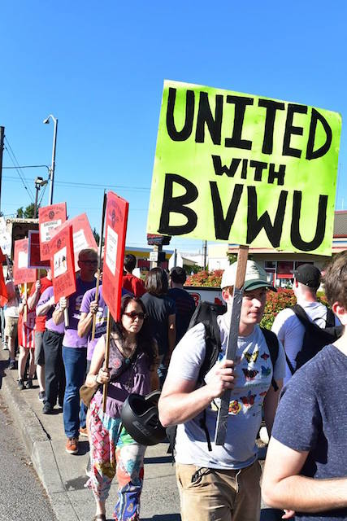

Burgerville Workers Union Marches Forward; Community Support and Solidarity Continue Growing
Submitted on Tue, 08/01/2017 - 7:47pm
Pete Shaw - Portland Occupier, July 19, 2017
The shakes–blackberry, chocolate hazelnut, and pumpkin spice–come and go. So do the Walla Walla onion rings, waffle fries, and asparagus. But since April of last year, solidarity has always been in season at Burgerville.
Since its formation 15 months ago, the Burgerville Workers Union (BVWU)–which is supported by the Portland Industrial Workers of the World–has been organizing for better working conditions on the job, greater benefits, and higher wages. Fighting against a management that promotes the Burgerville corporation as one which supports family values, local farmers, and sustainable practices, but treats its workers no differently than people have come to expect from larger fast food chains such as McDonald’s, the Burgerville Workers Union has slowly but surely been gathering steam in its struggle.
However, Burgerville management has so far refused to talk with the union.
On Friday July 14, the BVWU took another small but significant step toward pushing Burgerville’s management to start negotiating with it. A crowd of over 100 people picketed outside the Burgerville on Southeast 92nd and Powell during the early evening, virtually shutting down business at the store. On a hot night when one of the raspberry shakes would have made a delightful treat, only a few customers crossed the picket line.
At a rally just prior to establishing the line, Mark Medina of the BVWU told the gathered crowd, “We’re gonna shut down the shop for a couple of hours and make corporate know that workers care about benefits, about wages, and that they want Burgerville to negotiate with the union and respect the rights of workers here in Portland, Oregon. This is a union town. They should respect our rights to organize.”
That lack of respect was given official imprimatur when on June 22 Burgerville agreed to pay $10,000 to settle charges brought against it by the Oregon Bureau of Labor and Industries (BOLI) that between August 1 and August 15, 2015 the company willfully “failed to provide a meal period of not less than 30 continuous minutes during which the employee is relieved of all duties and/or failed to provide timely meal periods to twenty-eight employees” as required by law. Another 16 employees were also denied their 30-minute work-free meal period during a two-week period in December, 2016.
In addition to those charges, BOLI found that Burgerville was “employing minors under 18 in hazardous and permitted occupation” when two 17 year old employees operated a trash compactor which Oregon law has declared “hazardous and detrimental to to the health of employees under the age of 18.”
All charges pertained to the Burgerville store on NE Martin Luther King, Jr. Boulevard, near the Oregon Convention Center.
Brandon Doyle, BVWU Shop Leader at the SE 92nd and Powell Burgerville, is one of many Burgerville workers who has seen the company’s scarce regard for workers up close and personal. A few months ago Doyle was feeling ill to the point of vomiting while on the job. Instead of allowing him to go home and rest–as well as not risk getting Burgerville customers sick–Doyle’s manager insisted he remain at work. Fortunately, Doyle and his fellow workers contacted fellow union members from other stores, who then contacted Doyle’s manager, eventually resulting in Doyle being allowed to leave and likely helping prevent the spread of what ailed him. They had his back, and Doyle now wants to return the favor.
“The reason I’m here today,” said Doyle at Friday’s picket, “is to fight for the union and to fight for other workers. The reason I fight and the reason I’m here for people is I know what it’s like to be struggling by myself and to be the lone soldier in the entire fight. The reason I joined (the union) is that I don’t want other workers and other people feeling this way. I don’t want them feeling and suffering what I had to go through.”
Doyle and his fellow union members are demanding a $5.00 raise for all hourly Burgerville workers; affordable, quality healthcare; and a safe and healthy work environment. In addition, they are insisting on a supportive and sustainable workplace that includes paid maternity or paternity leave, free childcare, and transportation stipends.
“The full goal is we don’t want anyone struggling,” Doyle stated. “We want everyone to have a livable wage. We have workers that are homeless right now, and for a company like Burgerville who’s making a lot of money–they can take a little out of their pocket so people can live stably without feeling like they have to work five jobs in order to live stably.”
The BVWU has not limited that objective to its members. Members of the union marched with community leaders and families in Gresham on May 23 to demand that ICE (Immigration and Customs Enforcement Agency) “immediately cease all raid activities and for the City of Portland to establish a legal fund to provide adequate representation for detainees in immigration court.”
The union has also added to its demands that Burgerville be “a welcoming place for immigrant workers and be a sanctuary employer” while specifically demanding that the company “opt out of using E-Verify to screen the immigration status of applicants and establish a policy that requires ICE agents to present a warrant to access the back of the house in their restaurants.”
Friday’s picket featured the usual cast of Burgerville-hired security personnel doing their best to break the line. Once, in an effort to get a car through it, they told the line of people marching the 30 yard length of sidewalk from Powell to the store’s entrance that there were children in the vehicle. They had no response when picketers asked, “What about Burgerville workers who have kids?” and the driver turned away.
If the success of your organizing can be measured by what steps your opponent is taking against you, the BVWU must be doing well. Not long after the picket began, a clutch of four Portland police showed up in an attempt to bring their idea of order to the scene. They arrived in two police cars and two police SUVs, and soon another SUV and police officer arrived. One officer insisted that despite the picket line following the law–that is, moving along on the sidewalk–he had the right to break up the line to allow cars into Burgerville, stating a moving picket cannot block traffic. (At one point when police disrupted the picket line to let a car through, one person in the line refused to move. He was arrested and charged with obstructing traffic and second degree disorderly conduct. The obstructing traffic charge was later dropped. When arraigned on July 18, the remaining charge was dropped with police reserving the right to press charges at a later date.)
Ultimately, police intervention on the side of Burgerville’s management could only entice three cars with four potential customers to enter the parking lot. The number of supportive blaring car horns and encouraging voices from passing vehicles, however, was substantial.
That picket line was composed of many BVWU members, but included members from other organizations such as SEIU Local 49, the Democratic Socialists of America, the Working Families Party, and the Coalition of Graduate Employees. At other rallies, members of the Carpenters and the ILWU have also provided support, and on some occasions the Carpenters have set up a grill to provide would-be Burgerville customers with free and tasty alternatives. The Oregon AFL-CIO has also expressed support for the union, and numerous community members without union affiliation have also backed the Burgerville workers.
Friday’s action marked the BVWU’s deepest incursion yet into Southeast Portland. Despite Burgerville management’s often retaliatory tactics against members, the BVWU continues expanding its numbers and the scope of its organizing. After the picket line disbanded, the Burgerville Workers Union’s members and supporters gathered on the sidewalk outside the restaurant with a message for the workers inside.
Speaking through a bullhorn to his fellow employees inside the store, Medina said, “The reason we’re out here is because we want you to get five dollars an hour more across the board. We want you to be able to afford your families and yourself a livelihood. We’re here to support you. We will make history by forming the first-ever fast food workers union in the United States. We’re here to fight. We’re here to win.”
For more information on how to support the Burgerville Workers Union, visit their Facebook page at: https://www.facebook.com/burgervilleworkersunion/